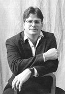

|
 Michael
Ray Taylor is the author of the creative
nonfiction works
DARK
LIFE (Scribner 1999) and
CAVE
PASSAGES (Scribner 1996). He has written for the Discovery Channel
Online, Audubon, Sports Illustrated, Reader's Digest, Writer's Digest,
and many other magazines. He holds the MFA in fiction and nonfiction from
the University of Arkansas, and a masters in English, with emphasis in
creative writing, from the University of South Carolina, where he studied
extensively under the late James Dickey. He chairs the Communication and
Theatre Arts department at Henderson State University, where he teaches
courses in advanced journalism, creative nonfiction, and writing for new
media. He lives with his wife and three sons in Arkadelphia, Arkansas. |